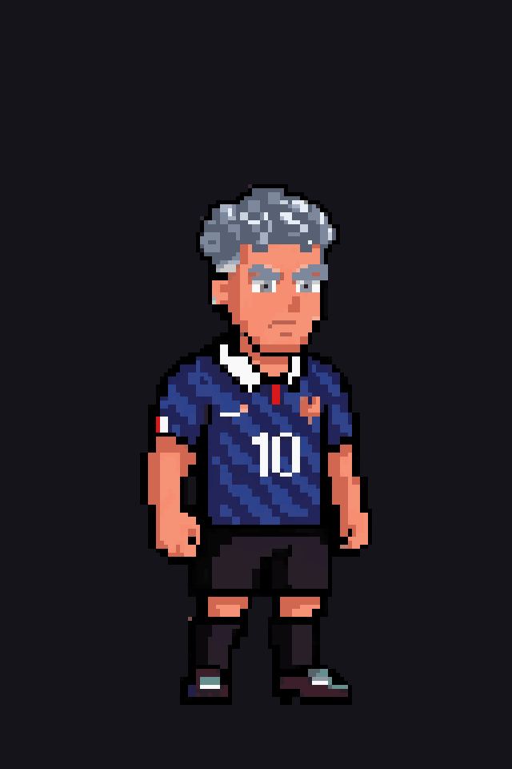
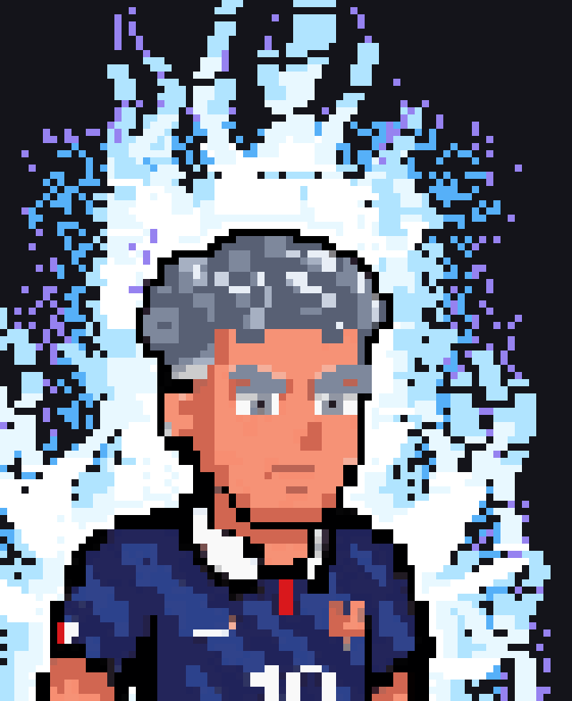

Mastered now uses Sign's hair build unchanged — same hairline, same
silhouette — recoloured to silver rather than flat white. The eyebrows are silver too,
and the serious brow angle is kept. Nothing else was touched.
Hairline and eyebrows
Sign · Mastered — 15×
Same hair build and the same hairline on both — Mastered's is recoloured,
not redrawn. Hairline offsets match Sign frame for frame across the loop
(15,15,15,15,14,14,14,15). Eyebrows are silver; the serious angle is Mastered's own.

Canonical form

9× at mid-loop — energy still sits directly against the
silhouette, no dark gap